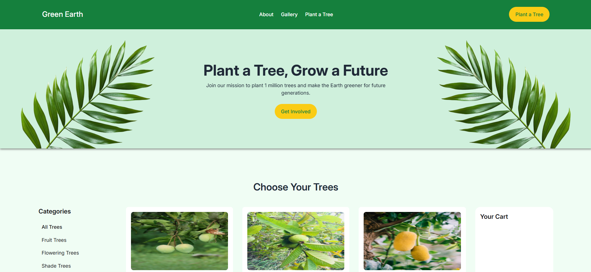

Green Earth
A web application empowering users to track, organize, and engage with environmental
Technology Stack
Description
Green Earth is a sustainability-focused web application designed to promote environmental awareness and eco-friendly practices.
The project focuses on structured layout design, smooth user experience and reusable UI components built with modern CSS utilities. The platform presents information in a clean, user-friendly interface, helping users explore green initiatives, environmental tips, and impactful actions for a better planet. The project emphasizes responsive design, accessibility, and modern UI principles.
Live Demo
View LiveGitHub Repository
Client RepoChallenges
- Designing visually appealing layout
- Ensuring consistent responsiveness
Future Improvements
- Adding interactive features such as animations
- Adding backend system
- Integrating a contact or newsletter